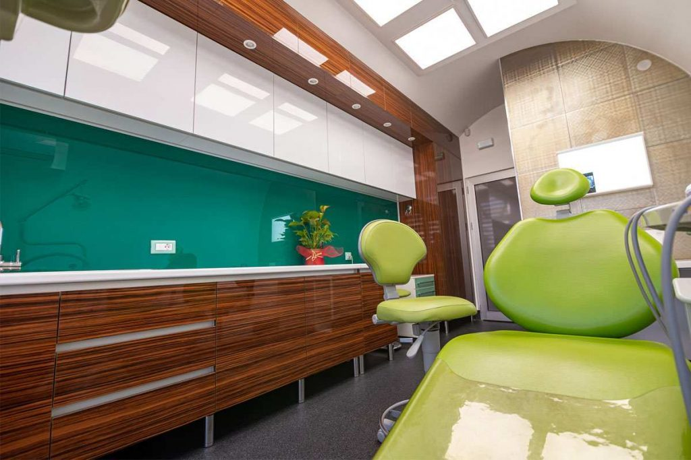
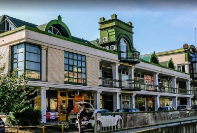
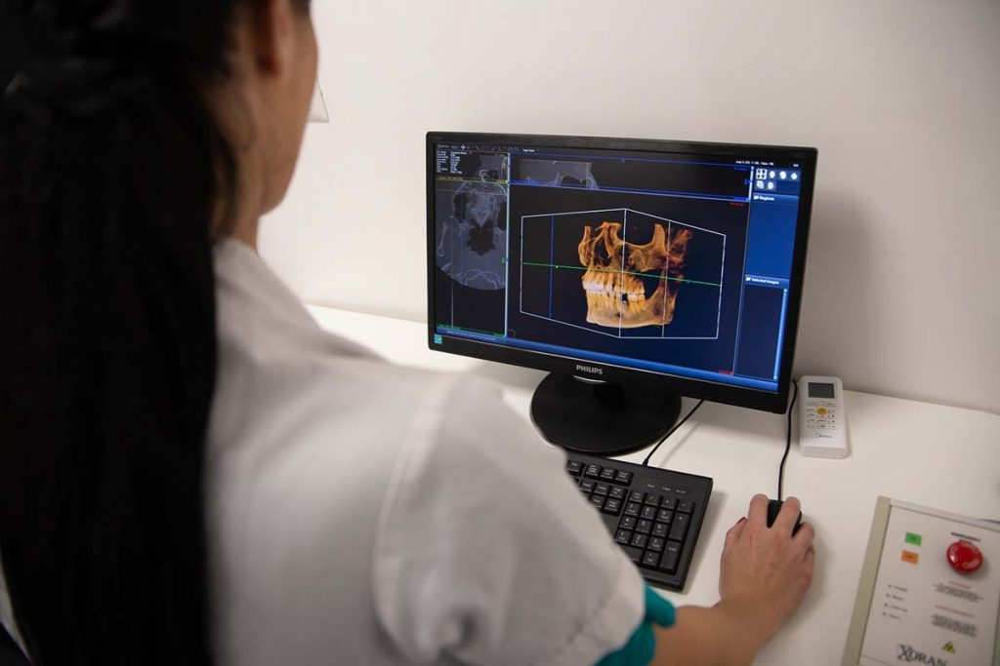
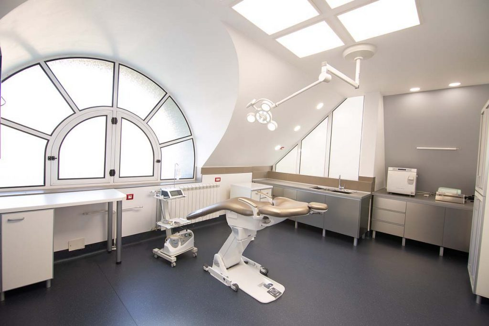
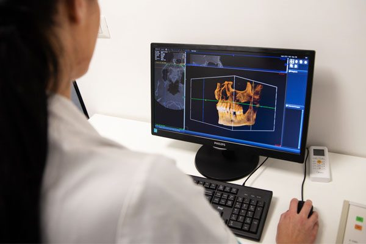
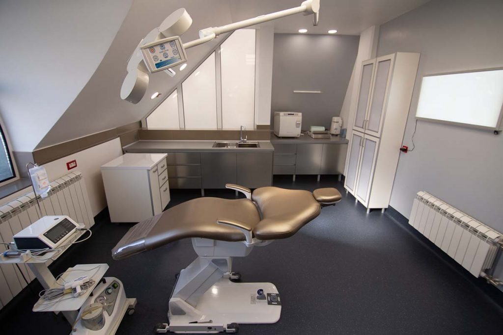
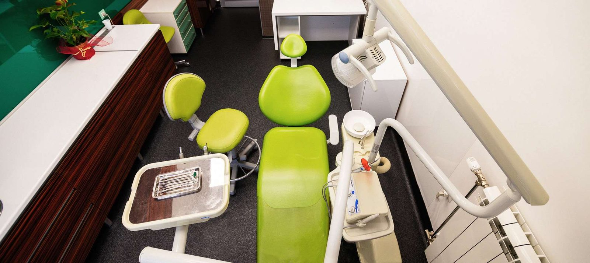
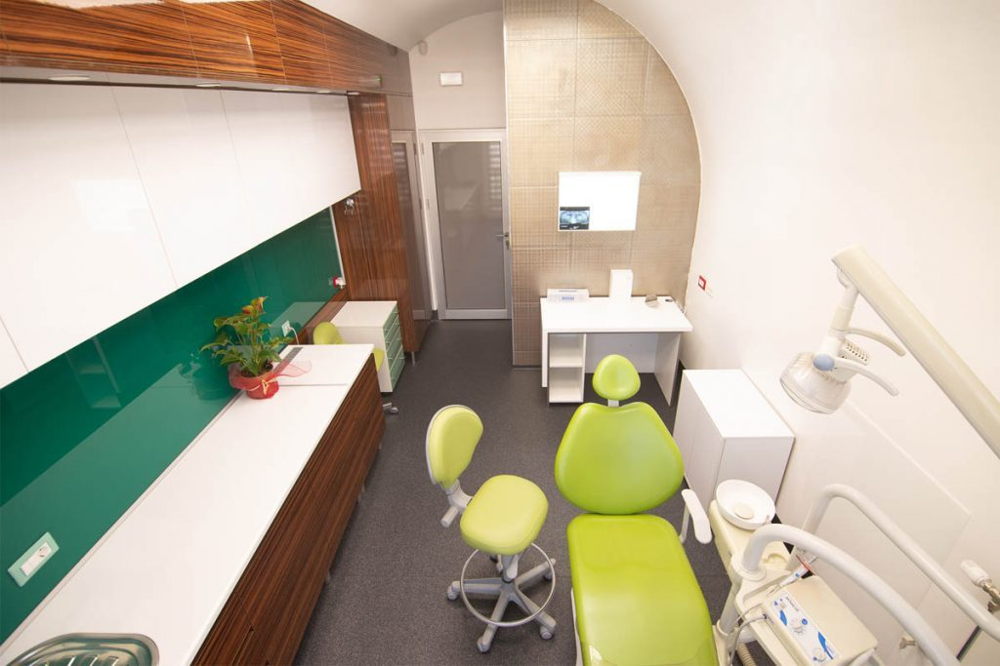
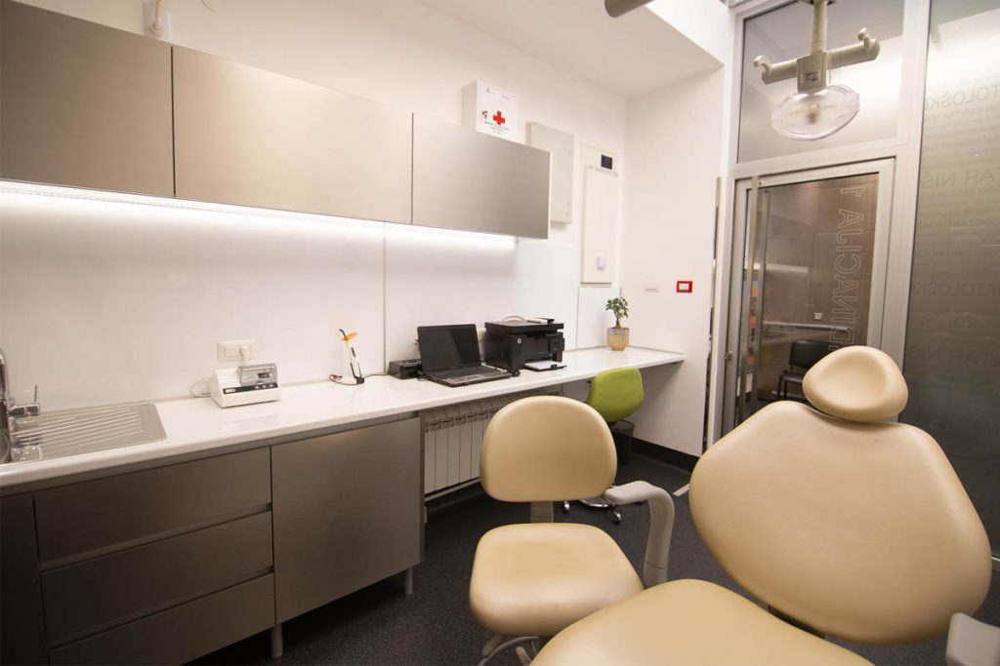
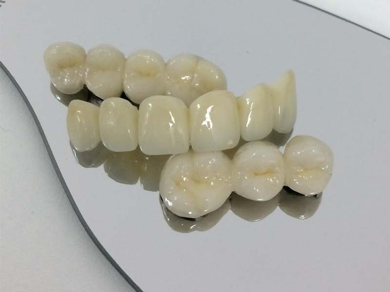

Orofacijalna hirurgija i implantologija
Hirurško vađenje duboko impaktiranih zuba, najčešće umnjaka, bez oštećenja okolnih struktura. Sinus lift i mini implantati.
Specijalistička zdravstvena ustanova, osnovana da pruži siguran, predvidiv i najbolji mogući tretman u najkraćem roku. Individualni plan lečenja i CBCT snimanje u istom centru.
Pon, sre, čet, pet 11–15 h, Utorak 12–20 h, Subota 12–14 h
4,443 ocena na Google-u


Hirurško vađenje duboko impaktiranih zuba, najčešće umnjaka, bez oštećenja okolnih struktura. Sinus lift i mini implantati.
Krunice, mostovi i proteze, uključujući fleksibilne proteze koje su udobnije za nošenje.
Cirkonijum i litijum-disilikat: prirodna transparencija i prelamanje svetla kao kod gleđi.
Estetske bravice od polusafirnog stakla, keramike ili plastike, i folije za blaže nepravilnosti.
Trodimenzionalni snimak CBCT skenerom, kada 2D snimak nije dovoljan.
Kompozitne i keramičke fasete za lepši oblik, veličinu i boju prednjih zuba.
Terapija hroničnog oboljenja potpornog aparata zuba pre nego što dovede do rasklaćenja.
Stomatološki tretman kod dece.


Kada želimo da prevaziđemo nedostatke 2D radiografije: visoka preciznost uz minimalnu dozu zračenja.





Ograničenje za ortodontski tretman u pogledu životne starosti skoro i da ne postoji.
Implantati se mogu ugraditi svakoj osobi koja je navršila 18 godina, sve do duboke starosti, ako je zdravstveno stanje adekvatno. Ugradnja je uvek individualna procena opšteg zdravlja i stanja kosti.
Implantati i krunice ne traže posebno održavanje, ali desni oko njih traže pažljivu oralnu higijenu i redovne kontrole.
Odluka posle analize iskusnog ortodonta. Folije su estetski prihvatljivije i za blaže nepravilnosti, ali ne mogu uvek da zamene fiksni aparat.
Kompozitne se rade direktno, u jednoj poseti, od materijala za bele plombe. Keramičke se izrađuju indirektno: u prvoj poseti se zubi pripremaju.
„Puni su strpljenja i mogu da se opustim u toku rada jer znam da su moji zubi u sigurnim rukama.“
„Termini zakazanih intervencija se poštuju, ambijent je prijatan, a stomatolozi su veoma profesionalni.“
„Prvi put sam otišla po preporuci prijatelja i bila pozitivno iznenađena. Sada bih i ja svakome preporučila ovu ordinaciju.“
Ostavite ime i broj, a mi vas zovemo da dogovorimo termin.
Bulevar Nemanjića 25, lokal K-16, Niš